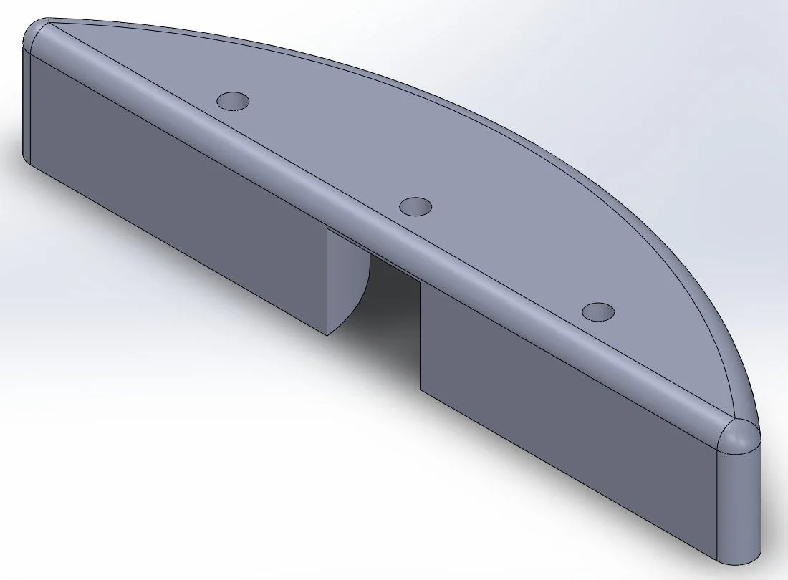
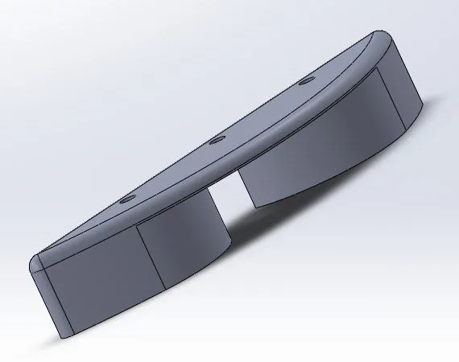
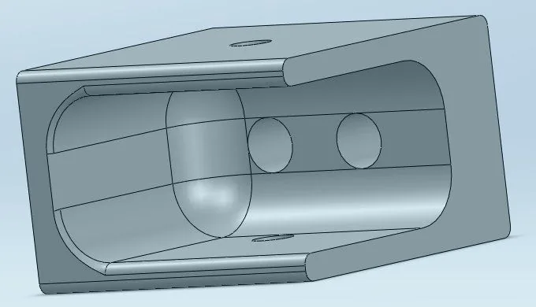
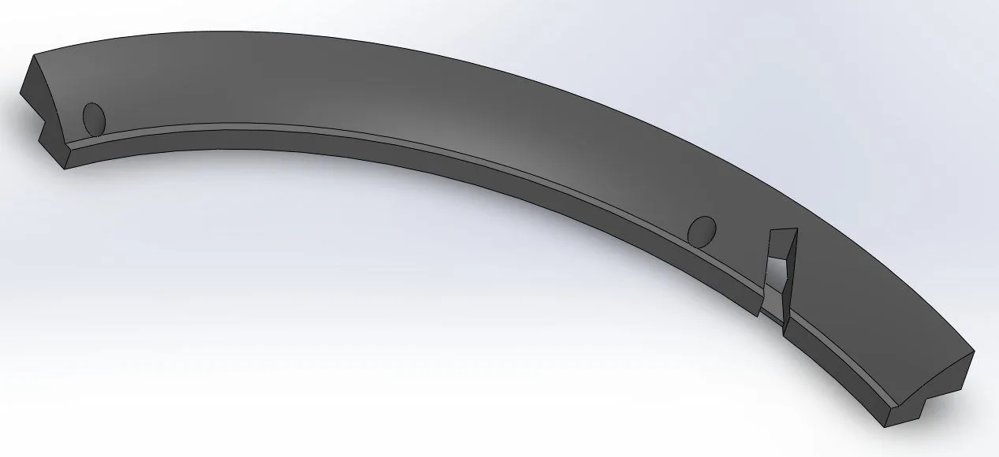

Turret wire management
| Version | When | Design | Result |
|---|---|---|---|
| Concept | Nov to Dec 2025 | Bidirectional energy chain routing worked out in CAD on a test plate. | Led to the V1 design. |
| V1 | Feb 2026 | Printed PETG arc tracks, caps, and channel block, with an energy chain and a constant-force spring pulley. | Cracked repeatedly in collision practice, and the chain hit the climber's roller chain. |
| V2 | Before the first competition | Laser-cut SRPP channel on aluminum standoffs, a cable sleeve in place of the chain, and the spring repositioned. | Ran all 28 official 2026 matches without a repair. |
The 2026 turret rotates about 400° in both directions, and every power and CAN wire to the shooter has to follow it without snagging, pinching, or flying loose.
During the fall 2025 offseason I studied how other teams route wires through turrets, then worked out bidirectional energy chain routing in CAD on a test plate Fig. 1.

V1

For V1 I designed arc guide tracks that carry the energy chain around the turret ring, plus caps and a channel block that form a pulley system with a constant-force spring. The spring keeps the chain under tension through the whole rotation so the wires cannot fly loose Fig. 2.
I printed every V1 part in PETG on my Bambu Lab A1 and revised parts like the caps as the design came together Fig. 3 to 6.




Why V2 replaced V1


In practice sessions that simulated match play, including collisions with other robots, the printed track and retainer cracked again and again Fig. 7. The energy chain also hit the roller chain that drives the climber, a second subsystem my routing had to share space with Fig. 8.
I went the opposite direction from a stronger print. I replaced the printed parts with a laser-cut SRPP channel on aluminum standoffs and swapped the energy chain for a cable sleeve Fig. 9. The sleeve has none of the chain's 0.75 × 0.75 in footprint, which cleared the climber chain. I kept the constant-force spring but moved it so it holds tension at all times and the routing cannot swing around.
V2 ran at both 2026 competitions Fig. 10 and 11. I would rather have a part that cannot break mid-match and block the shot than a stronger part that still might.